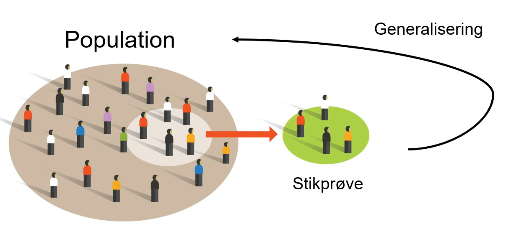
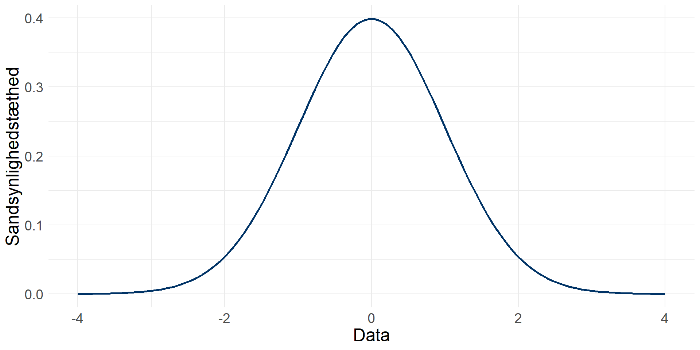
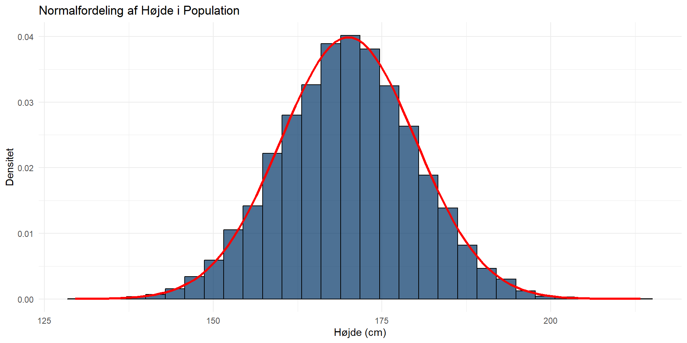
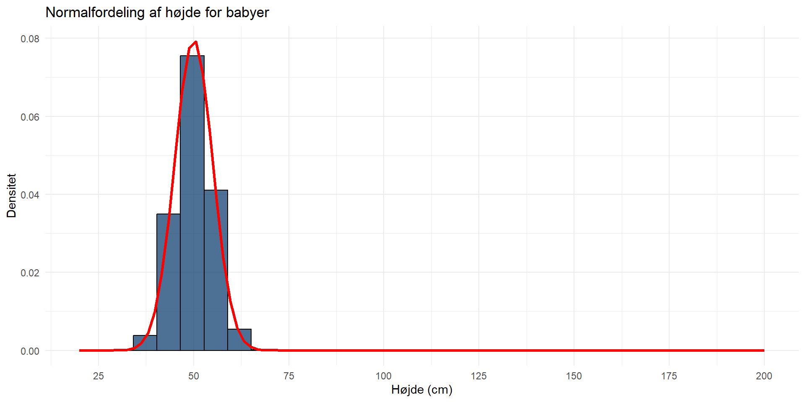
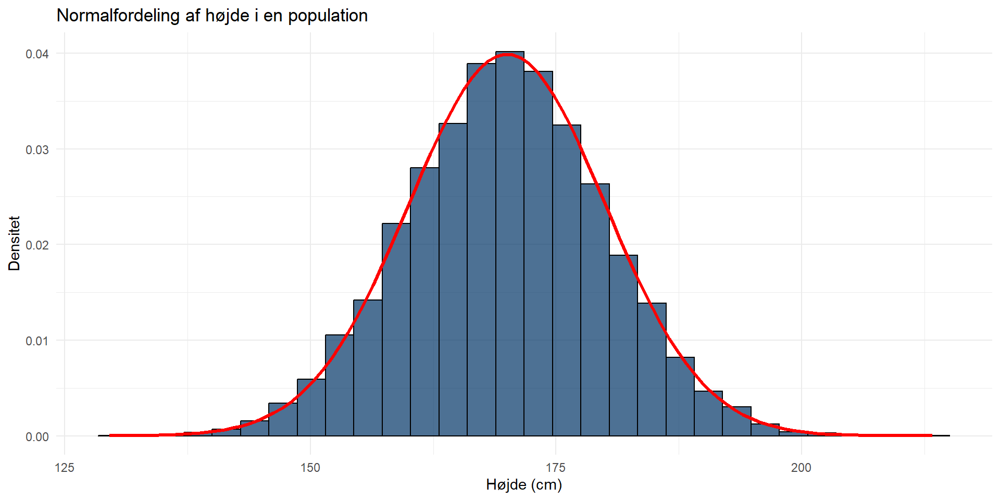

Populationer og stikprøver
Statistik E24 (15 ECTS)
ved Mikkeline Munk Nielsen
Program
- Hvad er populationer og stikprøver?
- Hvordan udtrækker man stikprøver?
- Hvorfor stikprøver introducerer statistisk usikkerhed
- Hvordan regner vi på statistisk usikkerhed?
Populationer
I statistik betegnes en population som den mængde af enheder, som vi gerne vil udtale os om. Hvis vi gerne vil udtale os om aldersfordelingen blandt borgere i Grønland er populationen altså samtlige borgere i Grønland. Man skelner dog mellem:
Universet/populationen (target population): den målgruppe, hvori en stikprøve trækkes
Den mulige population (frame population): den del af universet, som faktisk kan udtrækkes og dermed har mulighed for at indgå i stikprøven
Populationer
Hvis vi har information på ALLE de enheder, som vi gerne vil udtale os om har vi mulighed for at lave populationsundersøgelser/totalundersøgelser
Registerundersøgelser er det, der kommer tættest på: https://stat.gl/default.asp?lang=da
Oftest har vi dog hverken tid eller råd til at gennemføre populationsundersøgelser…
Stikprøver
En stikprøve er en lille del af universet, der udvælges til at repræsentere/beskrive hele universet 
Repræsentativitet og bortfald
En repræsentativ stikprøve er en stikprøve, som repræsenterer den population, som den er trukket fra på væsentlige karakteristka. Repræsentativitet afhænger dels af:
Udvælgelsesmekanismen (hvordan man trækker sin stikprøve)
Skævhed i stikprøven (sampling bias)
Tilfældig skævhed (som udgangspunkt uproblematisk)
Systematisk skævhed: der er systematik i, hvem der svarer, og hvem der ikke gør (problematisk!)
Repræsentativitet og bortfald
Repræsentativitet og bortfald
Eks.
Hvilken form for skævhed ville vi forvente, hvis vi udsendte en survey blandt en stikprøve af borgere i Grønland (simpelt tilfældigt udtrukket), men kun gjorde vores survey tilgængelig på dansk?
Repræsentativitet og bortfald
Bortfald er vigtigt, fordi det er påvirker vores undersøgelses eksterne validitet:
- Ekstern validitet: Refererer til generaliserbarheden af resultaterne.
Spørg dig selv: Kan du generalisere på dine resultater fra stikprøven til den population, som stikprøven kommer fra? Er populationen repræsenteret i tilstrækkelig grad i stikprøven? Det var jo hele pointen bag stikprøven i første omgang!
Repræsentativitet og bortfald
Man kan finde ud af, om ens stikprøve er repræsentativ for populationen ved at sammenligne fordelinger på vigtige variable fra hhv. population og stikprøve og evt. vægte underrepræsenterede grupper op:
| Køn | Alder (år) | Univers (antal) | Univers (pct.) | Stikprøve (antal) | Stikprøve (pct.) | Vægt |
|---|---|---|---|---|---|---|
| Mænd | 15-40 | 874.044 | 19,8 | 165 | 13,3 | 1,49 |
| Mænd | 40-69 | 1.057.619 | 24,0 | 368 | 29,6 | 0,81 |
| Mænd | 70+ | 233.798 | 5,3 | 77 | 6,2 | 0,86 |
| Kvinder | 15-40 | 851.737 | 19,3 | 179 | 14,4 | 1,34 |
| Kvinder | 40-69 | 1.053.420 | 23,9 | 359 | 28,9 | 0,83 |
| Kvinder | 70+ | 340.962 | 7,7 | 96 | 7,7 | 1,00 |
| Total | 4.411.580 | 100 | 1.244 | 100 |
Obs: her antages det, at der er tilfældigt bortfald! Ellers vægter man bare skævheden yderligere op.
Niveauer
| Begreb | Definition |
|---|---|
| Universet/populationen | Målgruppe, hvori en stikprøve udtrækkes (fx alle statsborgere i Danmark). |
| Den mulige population | Del af universet, som kan udtrækkes til stikprøven. |
| Stikprøve/sample | Lille del af universet, udvalgt til at repræsentere hele universet. |
| Respondenter/besvarelser | Del af stikprøven, der deltager i surveyen (svarprocent). |
Udtræk af stikprøver
Selvom mange observationer umiddelbart er godt, så er måden, hvorpå en stikprøve udtrækkes faktisk meget vigtigere for repræsentativiteten end størrelsen på stikprøven. I skal kende følgende tre strategier:
Simpel tilfældig (Gold standard)
Stratificeret: reduceret variation inden for strata
Klynge: Udtræk af klynger (ikke enkelte enheder)
Simpel tilfældigt udtræk
- Hver observation i populationen har lige sandsynlighed for at blive udtrukket
- Anses som “gold standard” for stikprøveudtagning
- Bruges til at minimere bias og sikre, at stikprøven repræsenterer hele populationen
Stratificeret udtræk
- Populationen opdeles i strata (grupper) baseret på en relevant variabel (fx kommune, køn)
- Tilfældig udtrækning sker inden for hver stratum
- Reduceret variation inden for hvert stratum (enheder er ens inden for strata, i princippet)
- Formålet er at sikre, at alle vigtige undergrupper er repræsenterede
Klyngeudtræk
Populationen opdeles i klynger (fx skoler, husstande), og udtrækning sker på klyngeniveau (ikke inden for klynger, ligesom med stata)
Udvælger hele klynger fremfor enkeltindivider inden for populationen
Effektiv, når det er praktisk at udtrække data fra grupper fremfor hele populationen
Velegnet til store geografiske eller administrative enheder, hvor stikprøver er svære at indsamle
Stikprøveudtræk og statistisk usikkerhed
Hvorfor virker tilfældigt udtræk?
- Hver enhed i populationen har samme sandsynlighed for at blive udvalgt (undgår systematisk bias/skævvridning)
- Sikrer, at stikprøven i gennemsnit er repræsentativ for populationen.
- Tilfældighed i stikprøveudtræk bygger på principper om lige sandsynlighed, store tals lov og den centrale grænseværdisætning.
Stikprøveudtræk og statistisk usikkerhed
På baggrund af en stikprøve drages konklusioner om en population (inferens). Slutningen er baseret på stikprøvens repræsentativitet
Den bedste måde at opnå repræsentativitet på er at anvende en udvælgelsesmekanisme baseret på tilfældighed!
Fordi en stikprøve ikke svarer præcist den population, som den er trukket fra, vil der altid være en statistisk usikkerhed forbundet med en generalisering fra stikprøve til population (også kaldt margin of error).
Statistik handler bl.a. om at sige noget under usikkerhed og om at vurdere, hvor stor usikkerheden på ens udsagn er.
Stikprøveudtræk og statistisk usikkerhed
Usikkerhed opstår pga. udvælgelsesmekanismen, når vi trækker en stikprøve.
Hvis vi f.eks. har en hat med sedler med alle navne på folk i Grønland (populationen), ryster hatten og lukker øjnene for at trække et navn, er der usikkerhed, hver gang vi trækker, fordi vi ikke kender udfaldet. Hvis vi gentager dette 1000 gange, har vi en stikprøve på 1000 personer.
Man kalder denne proces for et eksperiment inden for statistik.
For at håndtere usikkerhed opstiller man en matematisk sandsynlighedsmodel, som gør os i stand til at regne på usikkerheden
Stikprøveudtræk og statistisk usikkerhed
Sandsynlighedsmodellen bygger på tre ting:
Udfaldsrum \(\Omega\): alle mulige udfald/værdier af eksperimentet. I terningekast er \(\Omega = \{1, 2, 3, 4, 5, 6\}\)
Hændelser: samlinger af udfald. En hændelse \(A\) kunne f.eks. være at terningen viser et ulige antal øjne. Så vil hændelse \(A = \{1, 3, 5\}\)
Sandsynlighedsmål: hvis alle elementer i en population har lige stor chance for udvælgelse, så er sandsynligheden for et udfald \(z\) lig med værdien af andelsfunktionen evalueret i \(z\):
\[ P(z) = g(z) = \frac{\text{antal elementer med værdien } z \text{ i populationen}}{N_{\text{pop}}} \]
Stikprøveudtræk og statistisk usikkerhed
I ”eksperimenter” kender vi ikke udfaldet/værdien på den variabel, som vi er ved at trække. En variabel som endnu ikke har haft et udfald, og som derfor har tilknyttet usikkerhed, kaldes en stokastisk variabel.
En stokastisk variabel \(X\) er en funktion, som til ethvert udfald af et eksperiment forbinder en talv√¶rdi fra udfaldsrummet: \(ùëã(ùë¢ùëëùëìùëéùëôùëë)=ùë°ùëéùëô (\text{ùëìùëüùëé ùë¢ùëëùëìùëéùëôùëëùë†ùëüùë¢ùëöùëöùëíùë°})\)
Stokastiske variable repræsenterer udfald af et eksperiment.
Stikprøveudtræk og statistisk usikkerhed
Stokastiske variable kan være enten diskrete eller kontinuerte. Dette har betydning for, hvordan vi tilskriver sandsynlighed til deres værdier.
Diskrete variable: ting som man kan tælle. F.eks. Antal øjne på en terning eller antal varer solgt i en butik
Kontinuerte variable: variabler med uendeligt mange udfald inden for en given range. F.eks. Vandmængden i en vandflaske eller produktionstid for en vare. Begge tilfælde kan have uendeligt mange decimaler.
Stikprøveudtræk og statistisk usikkerhed
Stokastiske variable har også fordelinger. Der er to særligt vigtige fordelinger, som I skal kende til:
Binomial-fordelingen: for diskrete stokastiske variable
Normalfordelingen: for kontinuerte stokastiske variable
Binomial-fordeling
Man bruger binomialfordelingen, når man gentager et forsøg, der kun har to udfald (Bernoulli-forsøg). I statistik kaldes disse som regel succes og fiasko. Succes kan både defineres som f.eks. at slå ”krone” i plat og krone, men også bare som at observere en særlig værdi, f.eks. ”kvinde” i en population.
Forestil dig, at du 1000 gange trækker en tilfældig person fra den grønlandske population, og ønsker at vide sandsynligheden for at trække en kvinde. Binomialfordelingen kan hjælpe med at beregne dette.
Binomial-fordeling
Vi bruger binomialfordelingen, når vi arbejder med andele. Hvis alle enheder i populationen har lige stor chance for udvælgelse, så er sandsynligheden for udfaldet \(z\) nemlig lig andelen af enheder i populationen med værdi \(z\):
\(P(z) = \frac{\text{antal enheder i population med værdien } z \text{ i populationen}}{N_{\text{pop}}}\)
Når vi skal udregne statistisk usikkerhed forbundet med andele af f.eks. kvinder i vores stikprøve, gør vi det altså på baggrund af sandsynligheden for at trække en kvinde, når vi trækker vores stikprøve fra populationen!
Binomial-fordeling
Middelværdi og varians for binomialfordelte variable udregnes som følgende:
\[ \text{Middelværdi: } E(Y) = n \cdot p \\ \text{Varians: } V(Y) = n \cdot p \cdot (1 - p) \]
\(Y\) angiver antal succeser blandt \(n\) uafh√¶ngige udtr√¶kninger fra en population, hvor udfaldsrummet \(\Omega=\text{{success, fiasko}}\) og der er konstant sandsynlighed, \(ùëù\), for succes i hver udtr√¶kning.
Binomial-fordeling
Vi ved, at middelværdi \(E(Y) = n*p\) også kan fortolkes som andelen af observationerne i stikprøven med den værdi, som vi har angivet som “success”.
Hvis alle elementer i populationen har lige stor chance for udvælgelse, så er sandsynligheden for udfaldet \(z\) nemlig lig andelen af elementer i populationen med værdi \(z\):
\[ P(z) = g(z) = \frac{\text{antal elementer med værdien } z \text{ i populationen}}{N_{\text{pop}}} \]
Men vi ved også, at et stikprøvegennemsnit er behæftet med en hvis usikkerhed ift. populationsgennemsnittet, fordi udvælgelsesmekanismen har introduceret en vis tilfældighed. Derfor vil vi gerne kunne sige noget om, hvor stor usikkerheden er!
Store Tals Lov
Store Tals Lov siger, at når stikprøvestørrelsen ( n ) bliver stor, vil gennemsnittet i stikprøven nærme sig populationens sande gennemsnit, ():
\[ \frac{1}{n} \sum_{i=1}^{n} X_i \rightarrow \mu \quad \text{når } n \to \infty \] hvor ( \(X_i\) ) er en tilfældig variabel i stikprøven, og () er populationsgennemsnittet.Implikation: - Store Tals Lov giver os en garanti for, at stikprøvegennemsnittet bliver tættere på populationsgennemsnittet, efterhånden som stikprøven bliver større!
Den centrale grænseværdisætning
Den centrale grænseværdisætning fortæller os, at uanset hvilken fordeling hver observation fra en simpel tilfældig stikprøve følger, så er stikprøvegennemsnittet approksimativt (”så godt som”) normalfordelt, når bare stikprøven er tilstrækkelig stor.
(Malchow-Møller & Würst 2014:242)
Normalfordeling
Hvad er så særligt ved normalfordelingen?
Mange naturlige størrelser i virkelige populationer har en fordeling, som ligner normalfordelingen, f.eks. højde i en befolkning. Mange estimatorer og test-statistikker er normalfordelte; f.eks. stikprøvegennemsnit jf. den centrale grænseværdisætning
Normalfordeling
Normalfordelingen er kendetegnet ved at være symmetrisk fordelt omkring middelværdi \(\mu\), og dens bredde afhænger af varians \(\sigma^2\).
Kurven (tæthedsfunktionen) angiver sandsynligheden for at observere en given værdi.
Hvis en stokastisk variabel \(Y\) er normalfordelt \(Y \sim \mathcal{N}(\mu, \sigma^2)\) så er det altså mest sandsynligt at observere værdier, der ligger tæt på gennemsnittet.
Vi kan bruge denne information til at regne på usikkerheden på vores resultater!
Normalfordeling
Faktisk er normalfordelte variable skruet sådan sammen, at vi ud fra standardafvigelsen på en variabel kan sige, hvor stor en andel af observationerne der ligger inden for et given afstand til gennemsnittet.
Derfor kan man bruge standardafvigelsen fra en normalfordeling til at fastlægge en acceptabel niveau af usikkerhed, og estimere usikkerheden på sine stikprøveberegninger!
Normalfordelingen og statistisk usikkerhed
Hvis en variabel er normalfordelt så ligger omkring…
68 % af observationerne i intervallet +/- 1 standardafvigelse fra middelværdien
95 % af observationerne i intervallet +/- 2 standardafvigelse fra middelværdien
99,7 % af observationerne i intervallet +/- 3 standardafvigelse fra middelværdien
Standardnormalfordeling
I praksis bruger man en særlig normalfordeling, nemlig standardnormalfordelingen.
Hvorfor? Det er nemmest at tage udgangspunkt i en standardiseret udgave af normalfordelingen. Standardnormalfordelingen er en normalfordeling med et gennemsnit \(\mu=0\) og en standardafvigelse \(\sigma=1\)
Standardnormalfordeling
I standardnormalfordelingen ligger…
90 % af observationerne i intervallet ±1,645 standardafvigelser fra middelværdien
95 % af observationerne i intervallet ±1,96 standardafvigelser fra middelværdien
99 % af observationerne i intervallet ±2,576 standardafvigelser fra middelværdien
Estimation i stikprøver
Når vi ikke har adgang til fuld population kan vi altså bruge stikprøver til at estimere, hvordan fordelinger ser ud i populationen:
\(\mu\): Populationsgennemsnittet (det sande gennemsnit for hele populationen).
\(\bar{X}\): Stikprøvegennemsnittet (gennemsnittet beregnet ud fra en stikprøve, som bruges som et skøn for populationsgennemsnittet).
Når stikprøven er stor og repræsentativ, kan vi antage at: \(\bar{X} \approx \mu\)
Dog må vi leve med, at der altid er en hvis usikkerhed forbundet med stikprøvegennemsnittet… til gengæld kan vi regne på den!
Konfidensintervaller
For at give et bud på den usikkerhed, der er forbundet med de beregninger vi laver på stikprøver, kan vi udregne konfidensintervaller
Konfidensintervallet estimerer med en vis (u)sikkerhed indenfor hvilket interval populationens værdi ligger. I stedet for kun at angive et punkt-estimat (en andel eller et gennemsnittet), angiver man altså et interval inden for hvilket, man forventer at andelen/ gennemsnittet i populationen ligger.
Konfidensintervaller
Ved hjælp af den standardnormalfordelingen kan vi beregne, hvor sandsynligt det er, at populationsgennemsnittet ligger i et bestemt interval omkring stikprøvegennemsnittet. Det er meget almindeligt at konstruere 95% konfidensintervaller.
Princippet er, at man så udregner et interval, hvor vi populationens værdi med 95 % sikkerhed ligger indenfor. For en normalfordeling svarer dette til \(\pm 1.96\) standardafvigelser omkring stikprøvegennemsnittet.
Konfidensintervaller

Statistisk usikkerhed
Hvor statistisk sikker er en stikprøve?
Stikprøven absolutte størrelse: jo flere observationer desto bedre
Stikprøvens størrelse ift. universets størrelse (udtræk med tilbagelægning?)
Variationen i universet
Statistisk usikkerhed
Stikprøvens usikkerhed som funktion af stikprøvens størrelse:
| n | 1/99% | 2/98% | 5/95% | 10/90% | 15/85% | 20/80% | 25/75% | 30/70% | 35/65% | 40/60% | 45/55% | 50/50% |
|---|---|---|---|---|---|---|---|---|---|---|---|---|
| 50 | 2,8% | 3,9% | 6,0% | 8,3% | 9,9% | 11,1% | 12,0% | 12,7% | 13,2% | 13,6% | 13,8% | 13,9% |
| 100 | 2,0% | 2,7% | 4,3% | 5,9% | 7,0% | 7,8% | 8,5% | 9,0% | 9,3% | 9,6% | 9,8% | 9,8% |
| 250 | 1,2% | 1,7% | 2,7% | 3,7% | 4,4% | 5,0% | 5,4% | 5,7% | 5,9% | 6,1% | 6,2% | 6,2% |
| 500 | 0,9% | 1,2% | 1,9% | 2,6% | 3,1% | 3,5% | 3,8% | 4,0% | 4,2% | 4,3% | 4,4% | 4,4% |
| 750 | 0,7% | 1,0% | 1,6% | 2,1% | 2,6% | 2,9% | 3,1% | 3,3% | 3,4% | 3,5% | 3,6% | 3,6% |
| 1.000 | 0,6% | 0,9% | 1,4% | 1,9% | 2,2% | 2,5% | 2,7% | 2,8% | 3,0% | 3,0% | 3,1% | 3,1% |
| 1.500 | 0,5% | 0,7% | 1,1% | 1,5% | 1,8% | 2,0% | 2,2% | 2,3% | 2,4% | 2,5% | 2,5% | 2,5% |
| 2.000 | 0,4% | 0,6% | 1,0% | 1,3% | 1,6% | 1,8% | 1,9% | 2,0% | 2,1% | 2,1% | 2,2% | 2,2% |
| 5.000 | 0,3% | 0,4% | 0,6% | 0,8% | 1,0% | 1,1% | 1,2% | 1,3% | 1,3% | 1,3% | 1,4% | 1,4% |
| 10.000 | 0,2% | 0,3% | 0,4% | 0,6% | 0,7% | 0,8% | 0,8% | 0,9% | 0,9% | 1,0% | 1,0% | 1,0% |
Statistisk usikkerhed
Eksempel med 50/50 fordeling (høj variation)
Statistisk usikkerhed
Eksempel med 1/99 fordeling (lav variation)
Opsamling: populationer og stikprøver
- Population og Stikprøve:
- En population er den gruppe, vi ønsker at undersøge.
- En stikprøve er en repræsentativ del af populationen, som bruges til at drage konklusioner om populationen.
- Repræsentativitet og Bortfald:
- En stikprøve skal være repræsentativ for populationen for at give gyldige resultater.
- Tilfældig skævhed kan tolereres, men systematisk skævhed påvirker resultaterne negativt.
Opsamling: populationer og stikprøver
- Statistisk Usikkerhed og Sandsynlighed:
- Usikkerhed er altid til stede, når vi bruger stikprøver.
- Store Tals Lov og Den Centrale Grænseværdisætning sikrer, at stikprøvegennemsnit er pålidelige estimater af populationsgennemsnit for store stikprøver.
- Binomial- og Normalfordeling:
- Binomialfordelingen bruges til diskrete sandsynligheder (to udfald).
- Normalfordelingen bruges til kontinuerte variabler og er grundlaget for beregning af konfidensintervaller.
Opsamling: populationer og stikprøver
- Konfidensintervaller:
- Bruges til at give et interval omkring stikprøvegennemsnittet, hvor vi med høj sandsynlighed forventer, at populationsgennemsnittet ligger.
- Stikprøvestørrelse og Variation:
- Jo større stikprøven er, jo lavere usikkerhed.
- Variation i populationen påvirker, hvor præcis vores stikprøve kan være med en given størrelse.